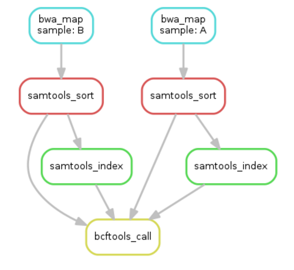

Walkthrough¶
We go through the example from the snakemake tutorial.
DAG¶
A workflow can be represented as a Directed Acyclic Graph (DAG) where the nodes are processes and a directed edge connects process A to process B if B needs to run only after A has completed. Logically, this is because process B needs data as input which process A can provide!
The graph is acyclic because a process cannot require itself to have run before running.
Here is the DAG of our example workflow:

Read data from two samples gets mapped, sorted, indexed and variant called.¶